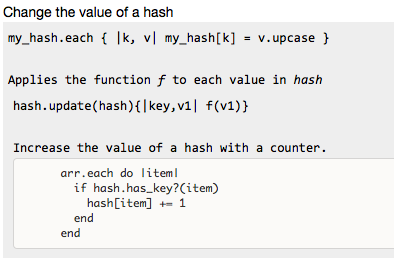

Databases are made up of
Entities: e.g. Person
Attributes: e.g. height, weight, gender, car
Relationships: "People have cars" (one to many)
Change the value of a hash

git remote -v
Delete branch: git branch -d other-branch
git checkout -b new-branch
Once the course is over (or if I have time to get started during the course), these books are on my list: